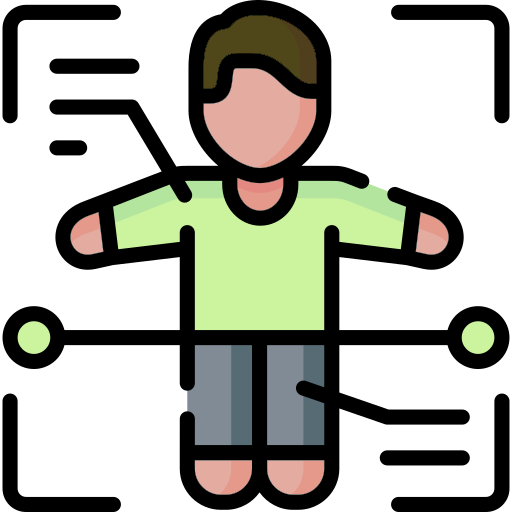

Body
Terms that refer to different parts of the body
| Term | Translation | Audio |
|---|---|---|
| arms | mispitona | |
| back | mispikwan | |
| body | miyaw | |
| body parts | miyawa | |
| ears | mihtawakaya | |
| eyes | miskı̄sikwa | |
| feet | misita | |
| fingers | micicesa | |
| hair | mistikwan | |
| hands | micihciya | |
| knee | mihcikwan | |
| legs | miskāta | |
| mouth | mitōn | |
| neck | mikwayaw | |
| nose | mikot | |
| stomach | matay | |
| teeth | mı̄pita | |
| throat | mikohtākan | |
| toes | yehyikitana | |
| tongue | miteyanı̄y |